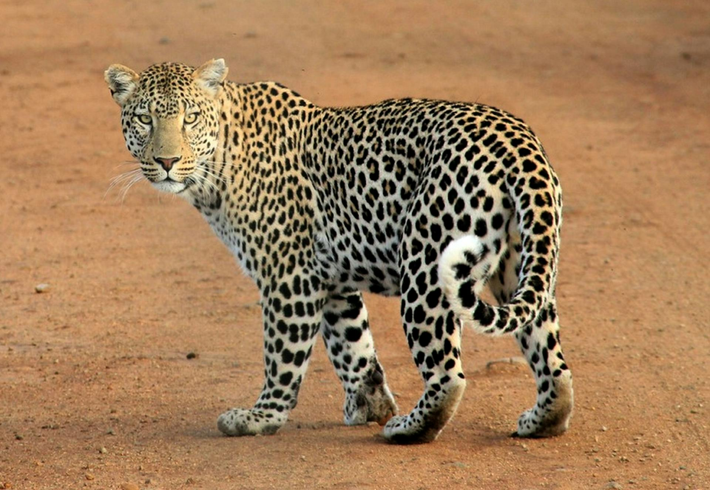
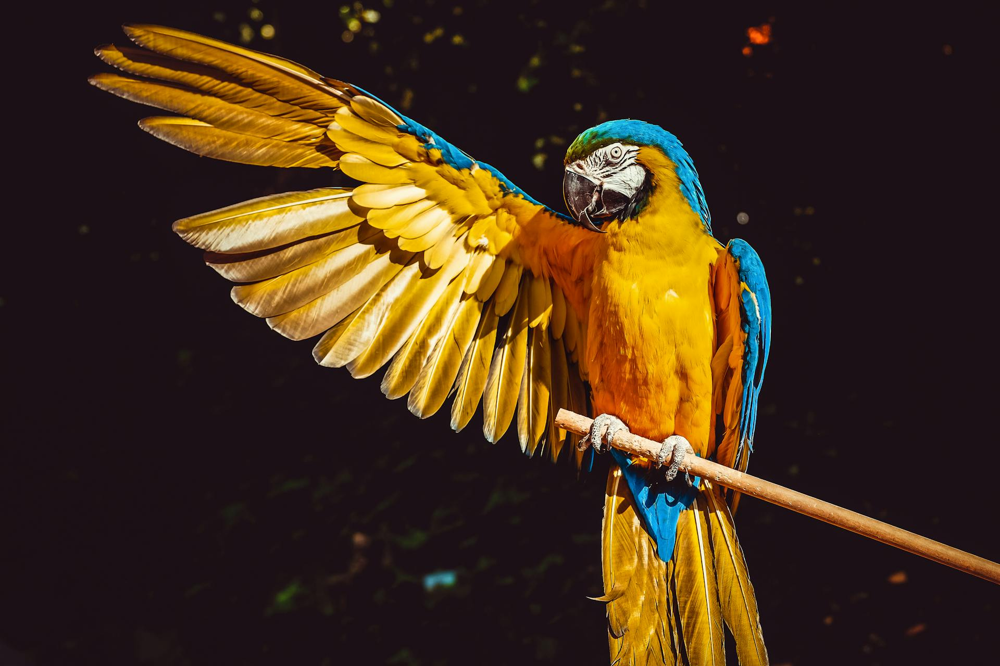
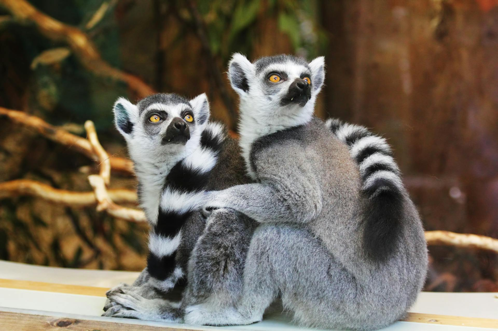

-

Onça-pintada
A onça-pintada ou jaguar, também conhecida como onça-preta, é uma espécie de mamífero carnívoro da família dos felídeos encontrada nas Américas. É o terceiro maior felino do mundo, após o tigre e o leão, sendo o maior do continente americano
-

Arara-amarela
A arara-canindé, também conhecida como arara-de-barriga-amarela, arari, arara-amarela, arara-azul-e-amarela, araraí e canindé, é uma das mais conhecidas representantes do gênero Ara, sendo uma das espécies emblemáticas do cerrado brasileiro e importante para muitas comunidades indígenas.
-

Lêmore-Sinzento
O Lêmure-Cinzento, também conhecido como Lêmure-Rato-Cinzento (Microcebus murinus), é uma espécie de lêmure pequena e noturna que habita Madagascar. Carateriza-se por uma pelagem cinzenta com tons avermelhados na parte dorsal e branca na parte ventral. É um dos primatas mais pequenos do mundo, com um comprimento de 10 a 14 cm e uma cauda de igual tamanho.
Um site feito para que o seu conhecimento sobre o mundo animal cresça.
Caso tenha dúvidas, entre em contato conosco. através de nossas redes sociais